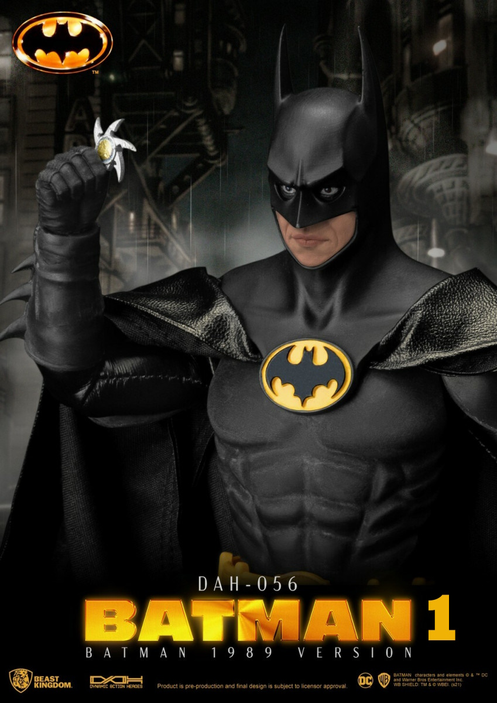
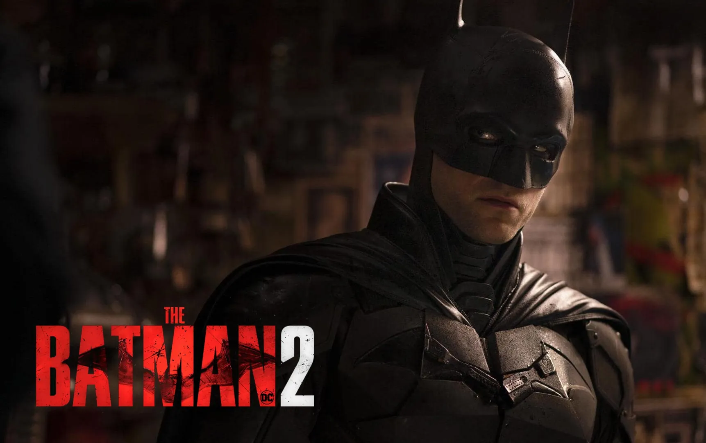

La saga di BatBoy raffigurando il personaggio princibale l'Uomo-Pistrelo, è stata molto
influenzata dalla mente del suo creatore: Steven Hawkins. Un genio senza pari
Purtroppo è finito alla Terza stagione senza un finale appropriato...
Film 1: L'Uomo-Pistrelo e il Pagliaccio che sorride
Quando il cavaliere oscuro Joker si è risvegliato. Esso ha scombinato panico, ma l'Uomo-Pistrelo
non potè restare a guardare! E' così che cominciò a combattere il Joker. E dopo un bel pò di
scontri, si baciarono appassionatamente. Questo rese un'altro nemico dell'Uomo-Pistrelo
molto geloso e vendicativo: Dio Brando!
Dio Brando è il vampiro per eccellenza e gli piace il sangue, vedere il Joker baciare
il suo amore segreto (l'Uomo-Pistrelo) lo rese ancora più arrabbiato e quindi decise
di attaccare gli orfani che il Joker faceva ridere ogni giorno.
Commedia, drama e azione sono all'ordine del giorno nel primo film della saga di BatBoy.

Film 2: Il ritorno dell'Uomo-Pistrelo

NUIEFFHUORBUHU NVHI I7VERiefsoinosevmnvsoneosvooevshfuiebisfffffffffffffffffff
foieoi omh mho8 h sm umuao mku8,u9a 9m,8 m9,7737937979 m 79 8 m1,, ,988 m,u s
skkpdkpsdskèpsdkèpsdkèp pèk opk1mmk kmimipk2 3opmk m3klm k3m im uiju834m j,fd
3 2ui hm77 ,9 984 08 04 m, + òè+dò rèò èdòr è+ò è+ò è+23- ùàòè+rò ùàò3è+2 òè+ò4èòt +è3ò
4ok tlèpl 3pl pèlpè4lpt5ptòp5l èpe4lt plgàlòe5p+5l +l òèp+ò4èl+4l +l + 4lt+pl+ftòè+
opto k4ptè lèp lèkg ok tpèl4 èpkk opk okg odko , 0ej ,,i tikrjio j48mk 89,idj,igj
Film 3: L'Uomo-Pistrelo e il calice di fuoco
NUIEFFHUORBUHU NVHI I7VERiefsoinosevmnvsoneosvooevshfuiebisfffffffffffffffffff
foieoi omh mho8 h sm umuao mku8,u9a 9m,8 m9,7737937979 m 79 8 m1,, ,988 m,u s
skkpdkpsdskèpsdkèpsdkèp pèk opk1mmk kmimipk2 3opmk m3klm k3m im uiju834m j,fd
3 2ui hm77 ,9 984 08 04 m, + òè+dò rèò èdòr è+ò è+ò è+23- ùàòè+rò ùàò3è+2 òè+ò4èòt +è3ò
4ok tlèpl 3pl pèlpè4lpt5ptòp5l èpe4lt plgàlòe5p+5l +l òèp+ò4èl+4l +l + 4lt+pl+ftòè+
opto k4ptè lèp lèkg ok tpèl4 èpkk opk okg odko , 0ej ,,i tikrjio j48mk 89,idj,igj